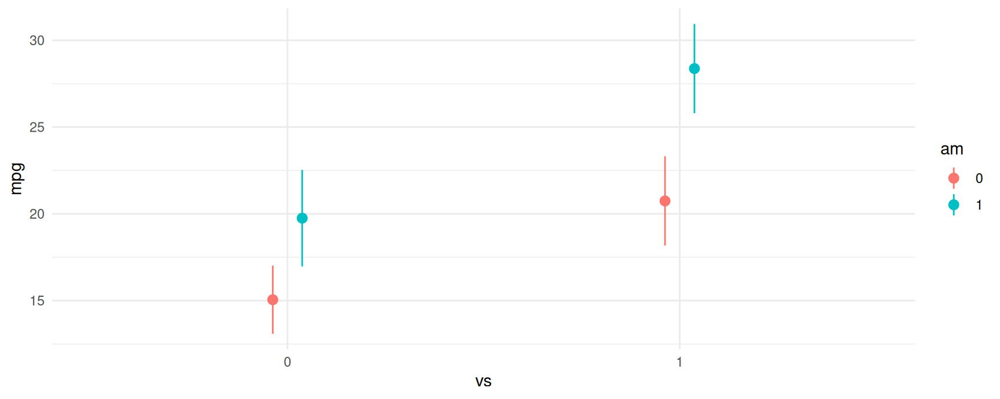
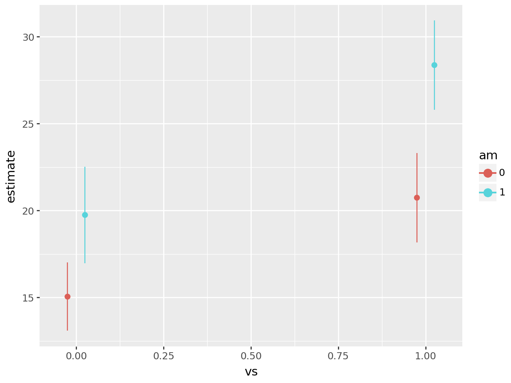
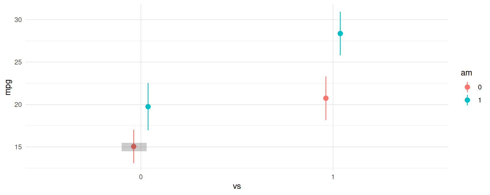
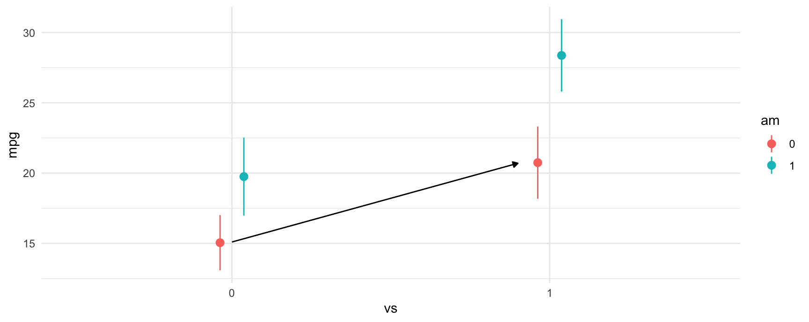
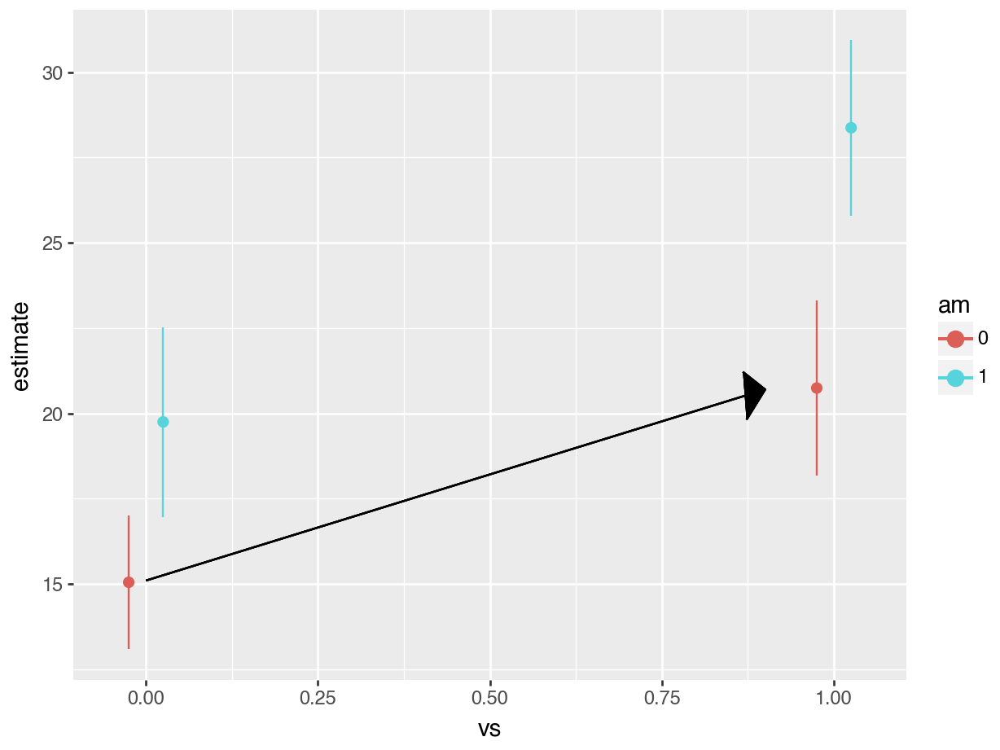
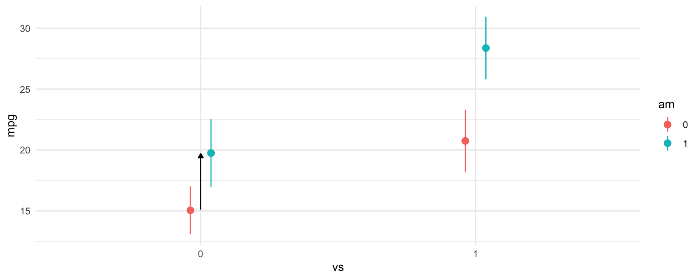
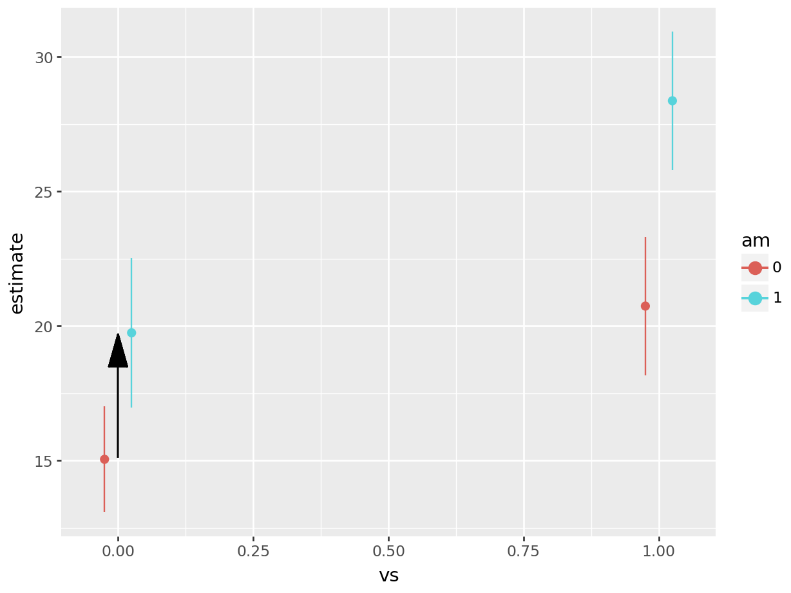
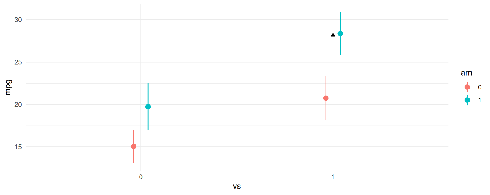
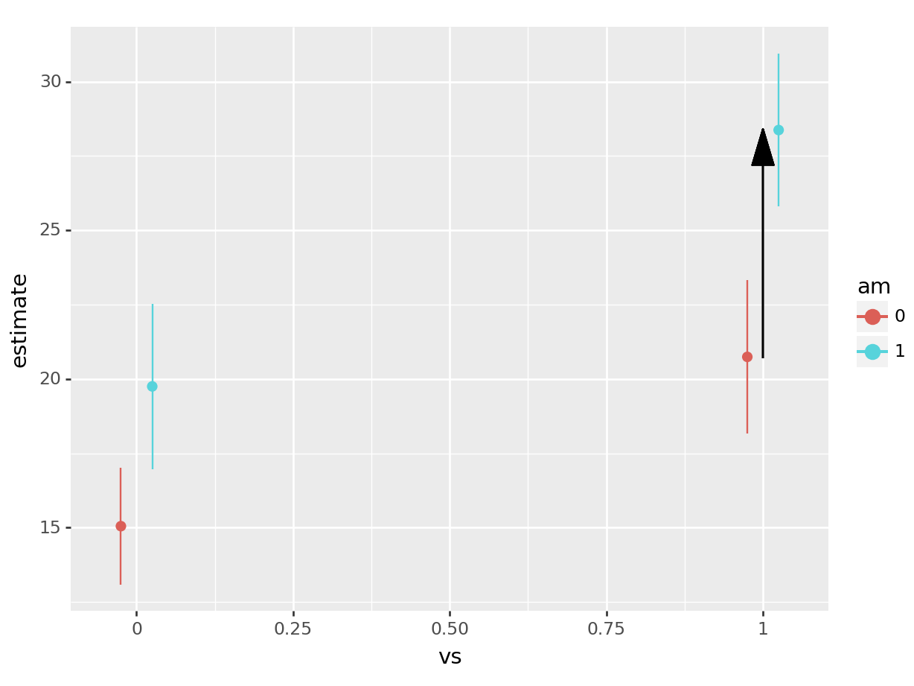
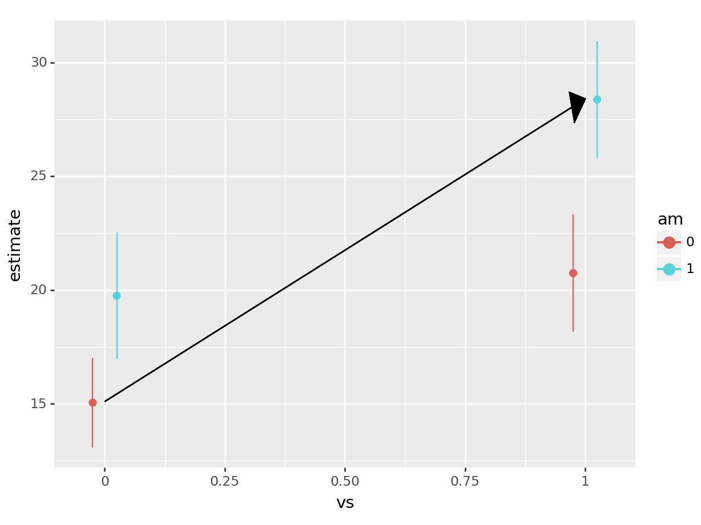

library(tidyverse)
library(marginaleffects)
library(modelsummary)
## See ?mtcars for variable definitions
fit <- lm(mpg ~ vs + am + vs:am, data=mtcars) # equivalent to ~ vs*amExperiments
2x2 Experiments
A 2×2 factorial design is a type of experimental design that allows researchers to understand the effects of two independent variables (each with two levels) on a single dependent variable. The design is popular among academic researchers as well as in industry when running A/B tests.
In this notebook, we illustrate how to analyze these designs with the marginaleffects package for R. As we will see, marginaleffects includes many convenient functions for analyzing both experimental and observational data, and for plotting our results.
Fitting a Model
We will use the mtcars dataset. We’ll analyze fuel efficiency, mpg (miles per gallon), as a function of am (transmission type) and vs (engine shape).
vs is an indicator variable for if the car has a straight engine (1 = straight engine, 0 = V-shaped). am is an indicator variable for if the car has manual transmission (1 = manual transmission, 0=automatic transmission). There are then four types of cars (1 type for each of the four combinations of binary indicators).
Let’s start by creating a model for fuel efficiency. For simplicity, we’ll use linear regression and model the interaction between vs and am.
import polars as pl
import statsmodels.formula.api as smf
from marginaleffects import *
mtcars = pl.read_csv("https://vincentarelbundock.github.io/Rdatasets/csv/datasets/mtcars.csv")
fit = smf.ols("mpg ~ vs + am + vs:am", data = mtcars).fit() # equivalent to ~ vs*amWe can plot the predictions from the model using the plot_predictions function. From the plot below, we can see a few things:
- Straight engines (
vs=1) are estimated to have better expected fuel efficiency than V-shaped engines (vs=0). - Manual transmissions (
am=1) are estimated to have better fuel efficiency for both V-shaped and straight engines. - For straight engines, the effect of manual transmissions on fuel efficiency seems to increase.
plot_predictions(fit, by = c("vs", "am"))
plot_predictions(fit, by = ["vs", "am"]).draw(show=True)
Evaluating Effects From The Model Summary
Since this model is fairly simple the estimated differences between any of the four possible combinations of vs and am can be read from the regression table:
We create the regression table using the modelsummary package:
modelsummary(fit, gof_map = c("r.squared", "nobs"))| (1) | |
|---|---|
| (Intercept) | 15.050 |
| (1.002) | |
| vs | 5.693 |
| (1.651) | |
| am | 4.700 |
| (1.736) | |
| vs × am | 2.929 |
| (2.541) | |
| R2 | 0.700 |
| Num.Obs. | 32 |
print(fit.summary())
#> OLS Regression Results
#> ==============================================================================
#> Dep. Variable: mpg R-squared: 0.700
#> Model: OLS Adj. R-squared: 0.668
#> Method: Least Squares F-statistic: 21.81
#> Date: Fri, 01 Mar 2024 Prob (F-statistic): 1.73e-07
#> Time: 13:22:19 Log-Likelihood: -83.098
#> No. Observations: 32 AIC: 174.2
#> Df Residuals: 28 BIC: 180.1
#> Df Model: 3
#> Covariance Type: nonrobust
#> ==============================================================================
#> coef std err t P>|t| [0.025 0.975]
#> ------------------------------------------------------------------------------
#> Intercept 15.0500 1.002 15.017 0.000 12.997 17.103
#> vs 5.6929 1.651 3.448 0.002 2.311 9.075
#> am 4.7000 1.736 2.708 0.011 1.144 8.256
#> vs:am 2.9286 2.541 1.153 0.259 -2.276 8.134
#> ==============================================================================
#> Omnibus: 0.609 Durbin-Watson: 1.520
#> Prob(Omnibus): 0.738 Jarque-Bera (JB): 0.713
#> Skew: -0.223 Prob(JB): 0.700
#> Kurtosis: 2.421 Cond. No. 6.32
#> ==============================================================================
#>
#> Notes:
#> [1] Standard Errors assume that the covariance matrix of the errors is correctly specified.We can express the same results in the form of a linear equation:
\[ \mbox{mpg} = 15.050 + 5.693 \cdot \mbox{vs} + 4.700 \cdot \mbox{am} + 2.929 \cdot \mbox{vs} \cdot \mbox{am}.\]
With a little arithmetic, we can compute estimated differences in fuel efficiency between different groups:
- 4.700 mpg between
am=1andam=0, whenvs=0. - 5.693 mpg between
vs=1andvs=0, whenam=0. - 7.629 mpg between
am=1andam=0, whenvs=1. - 8.621 mpg between
vs=1andvs=0, whenam=1. - 13.322 mpg between a car with
am=1andvs=1, and a car witham=0andvs=0.
Reading off these differences from the model summary is relatively straightforward in very simple cases like this one. However, it becomes more difficult as more variables are added to the model, not to mention obtaining estimated standard errors becomes nightmarish. To make the process easier, we can leverage the avg_comparisons() function from the marginaleffects package to compute the appropriate quantities and standard errors.
Using avg_comparisons To Estimate All Differences
The grey rectangle in the graph below is the estimated fuel efficiency when vs=0 and am=0, that is, for an automatic transmission car with V-shaped engine.

Let’s use avg_comparisons to get the difference between straight engines and V-shaped engines when the car has automatic transmission. In this call, the variables argument indicates that we want to estimate the effect of a change of 1 unit in the vs variable. The newdata=datagrid(am=0) determines the values of the covariates at which we want to evaluate the contrast.
avg_comparisons(fit,
variables = "vs",
newdata = datagrid(am = 0))
#>
#> Term Contrast Estimate Std. Error z Pr(>|z|) S 2.5 % 97.5 %
#> vs 1 - 0 5.69 1.65 3.45 <0.001 10.8 2.46 8.93
#>
#> Columns: rowid, term, contrast, estimate, std.error, statistic, p.value, s.value, conf.low, conf.high, predicted_lo, predicted_hi, predicted
#> Type: responseAs expected, the results produced by avg_comparisons() are exactly the same as those which we read from the model summary table. The contrast that we just computed corresponds to the change illustrasted by the arrow in this plot:

print(avg_comparisons(fit,
variables = "vs",
newdata = datagrid(am = 0)))
#> shape: (1, 9)
#> ┌──────┬──────────────────────────┬──────────┬───────────┬───┬──────────┬──────┬──────┬───────┐
#> │ Term ┆ Contrast ┆ Estimate ┆ Std.Error ┆ … ┆ P(>|z|) ┆ S ┆ 2.5% ┆ 97.5% │
#> │ --- ┆ --- ┆ --- ┆ --- ┆ ┆ --- ┆ --- ┆ --- ┆ --- │
#> │ str ┆ str ┆ str ┆ str ┆ ┆ str ┆ str ┆ str ┆ str │
#> ╞══════╪══════════════════════════╪══════════╪═══════════╪═══╪══════════╪══════╪══════╪═══════╡
#> │ vs ┆ mean(True) - mean(False) ┆ 5.69 ┆ 1.65 ┆ … ┆ 0.000565 ┆ 10.8 ┆ 2.46 ┆ 8.93 │
#> └──────┴──────────────────────────┴──────────┴───────────┴───┴──────────┴──────┴──────┴───────┘
#>
#> Columns: term, contrast, estimate, std_error, statistic, p_value, s_value, conf_low, conf_highAs expected, the results produced by avg_comparisons() are exactly the same as those which we read from the model summary table. The contrast that we just computed corresponds to the change illustrasted by the arrow in this plot:

The next difference that we compute is between manual transmissions and automatic transmissions when the car has a V-shaped engine. Again, the call to avg_comparisons is shown below, and the corresponding contrast is indicated in the plot below using an arrow.
avg_comparisons(fit,
variables = "am",
newdata = datagrid(vs = 0))
#>
#> Term Contrast Estimate Std. Error z Pr(>|z|) S 2.5 % 97.5 %
#> am 1 - 0 4.7 1.74 2.71 0.00678 7.2 1.3 8.1
#>
#> Columns: rowid, term, contrast, estimate, std.error, statistic, p.value, s.value, conf.low, conf.high, predicted_lo, predicted_hi, predicted
#> Type: response
print(avg_comparisons(fit,
variables = "am",
newdata = datagrid(vs = 0)))
#> shape: (1, 9)
#> ┌──────┬──────────────────────────┬──────────┬───────────┬───┬─────────┬──────┬──────┬───────┐
#> │ Term ┆ Contrast ┆ Estimate ┆ Std.Error ┆ … ┆ P(>|z|) ┆ S ┆ 2.5% ┆ 97.5% │
#> │ --- ┆ --- ┆ --- ┆ --- ┆ ┆ --- ┆ --- ┆ --- ┆ --- │
#> │ str ┆ str ┆ str ┆ str ┆ ┆ str ┆ str ┆ str ┆ str │
#> ╞══════╪══════════════════════════╪══════════╪═══════════╪═══╪═════════╪══════╪══════╪═══════╡
#> │ am ┆ mean(True) - mean(False) ┆ 4.7 ┆ 1.74 ┆ … ┆ 0.00678 ┆ 7.21 ┆ 1.3 ┆ 8.1 │
#> └──────┴──────────────────────────┴──────────┴───────────┴───┴─────────┴──────┴──────┴───────┘
#>
#> Columns: term, contrast, estimate, std_error, statistic, p_value, s_value, conf_low, conf_high
The third difference we estimated was between manual transmissions and automatic transmissions when the car has a straight engine. The model call and contrast are:
avg_comparisons(fit,
variables = "am",
newdata = datagrid(vs = 1))
#>
#> Term Contrast Estimate Std. Error z Pr(>|z|) S 2.5 % 97.5 %
#> am 1 - 0 7.63 1.86 4.11 <0.001 14.6 3.99 11.3
#>
#> Columns: rowid, term, contrast, estimate, std.error, statistic, p.value, s.value, conf.low, conf.high, predicted_lo, predicted_hi, predicted
#> Type: response
print(avg_comparisons(fit,
variables = "am",
newdata = datagrid(vs = 1)))
#> shape: (1, 9)
#> ┌──────┬──────────────────────────┬──────────┬───────────┬───┬──────────┬──────┬──────┬───────┐
#> │ Term ┆ Contrast ┆ Estimate ┆ Std.Error ┆ … ┆ P(>|z|) ┆ S ┆ 2.5% ┆ 97.5% │
#> │ --- ┆ --- ┆ --- ┆ --- ┆ ┆ --- ┆ --- ┆ --- ┆ --- │
#> │ str ┆ str ┆ str ┆ str ┆ ┆ str ┆ str ┆ str ┆ str │
#> ╞══════╪══════════════════════════╪══════════╪═══════════╪═══╪══════════╪══════╪══════╪═══════╡
#> │ am ┆ mean(True) - mean(False) ┆ 7.63 ┆ 1.86 ┆ … ┆ 3.94e-05 ┆ 14.6 ┆ 3.99 ┆ 11.3 │
#> └──────┴──────────────────────────┴──────────┴───────────┴───┴──────────┴──────┴──────┴───────┘
#>
#> Columns: term, contrast, estimate, std_error, statistic, p_value, s_value, conf_low, conf_high
The last difference and contrast between manual transmissions with straight engines and automatic transmissions with V-shaped engines. We call this a “cross-contrast” because we are measuring the difference between two groups that differ on two explanatory variables at the same time. To compute this contrast, we use the cross argument of avg_comparisons:
avg_comparisons(fit,
variables = c("am", "vs"),
cross = TRUE)
#>
#> Estimate Std. Error z Pr(>|z|) S 2.5 % 97.5 % C: am C: vs
#> 13.3 1.65 8.07 <0.001 50.3 10.1 16.6 1 - 0 1 - 0
#>
#> Columns: term, contrast_am, contrast_vs, estimate, std.error, statistic, p.value, s.value, conf.low, conf.high
#> Type: response
# Not implemented yet
Conclusion
The 2x2 design is a very popular design, and when using a linear model, the estimated differences between groups can be directly read off from the model summary, if not with a little arithmetic. However, when using models with a non-identity link function, or when seeking to obtain the standard errors for estimated differences, things become considerably more difficult. This vignette showed how to use avg_comparisons to specify contrasts of interests and obtain standard errors for those differences. The approach used applies to all generalized linear models and effects can be further stratified using the by argument (although this is not shown in this vignette.)
Regression adjustment
Many analysts who conduct and analyze experiments wish to use regression adjustment with a linear regression model to improve the precision of their estimate of the treatment effect. Unfortunately, regression adjustment can introduce small-sample bias and other undesirable properties (Freedman 2008). Lin (2013) proposes a simple strategy to fix these problems in sufficiently large samples:
- Center all predictors by subtracting each of their means.
- Estimate a linear model in which the treatment is interacted with each of the covariates.
The estimatr package includes a convenient function to implement this strategy:
library(estimatr)
library(marginaleffects)
lalonde <- read.csv("https://vincentarelbundock.github.io/Rdatasets/csv/MatchIt/lalonde.csv")
mod <- lm_lin(
re78 ~ treat,
covariates = ~ age + educ + race,
data = lalonde,
se_type = "HC3")
summary(mod)
#>
#> Call:
#> lm_lin(formula = re78 ~ treat, covariates = ~age + educ + race,
#> data = lalonde, se_type = "HC3")
#>
#> Standard error type: HC3
#>
#> Coefficients:
#> Estimate Std. Error t value Pr(>|t|) CI Lower CI Upper DF
#> (Intercept) 6488.05 356.71 18.1885 2.809e-59 5787.50 7188.6 604
#> treat 489.73 878.52 0.5574 5.774e-01 -1235.59 2215.0 604
#> age_c 85.88 35.42 2.4248 1.561e-02 16.32 155.4 604
#> educ_c 464.04 131.51 3.5286 4.495e-04 205.77 722.3 604
#> racehispan_c 2775.47 1155.40 2.4022 1.660e-02 506.38 5044.6 604
#> racewhite_c 2291.67 793.30 2.8888 4.006e-03 733.71 3849.6 604
#> treat:age_c 17.23 76.37 0.2256 8.216e-01 -132.75 167.2 604
#> treat:educ_c 226.71 308.43 0.7350 4.626e-01 -379.02 832.4 604
#> treat:racehispan_c -1057.84 2652.42 -0.3988 6.902e-01 -6266.92 4151.2 604
#> treat:racewhite_c -1205.68 1805.21 -0.6679 5.045e-01 -4750.92 2339.6 604
#>
#> Multiple R-squared: 0.05722 , Adjusted R-squared: 0.04317
#> F-statistic: 4.238 on 9 and 604 DF, p-value: 2.424e-05lalonde = pl.read_csv("https://vincentarelbundock.github.io/Rdatasets/csv/MatchIt/lalonde.csv", infer_schema_length=200)
lalonde = lalonde.to_dummies('race')
lalonde = lalonde.with_columns(
pl.col('age').sub(pl.col('age').mean()),
pl.col('educ').sub(pl.col('educ').mean()),
pl.col('race_hispan').sub(pl.col('race_hispan').mean()),
pl.col('race_white').sub(pl.col('race_white').mean()),
)
mod = smf.ols("re78 ~ treat + age + educ + race_hispan + race_white + treat*(age + educ + race_hispan + race_white)", data = lalonde.to_pandas()).fit()
print(mod.get_robustcov_results(cov_type='HC3').summary())
#> OLS Regression Results
#> ==============================================================================
#> Dep. Variable: re78 R-squared: 0.057
#> Model: OLS Adj. R-squared: 0.043
#> Method: Least Squares F-statistic: 4.238
#> Date: Fri, 01 Mar 2024 Prob (F-statistic): 2.42e-05
#> Time: 13:22:24 Log-Likelihood: -6328.8
#> No. Observations: 614 AIC: 1.268e+04
#> Df Residuals: 604 BIC: 1.272e+04
#> Df Model: 9
#> Covariance Type: HC3
#> =====================================================================================
#> coef std err t P>|t| [0.025 0.975]
#> -------------------------------------------------------------------------------------
#> Intercept 6488.0506 356.712 18.188 0.000 5787.505 7188.597
#> treat 489.7253 878.517 0.557 0.577 -1235.594 2215.045
#> age 85.8798 35.417 2.425 0.016 16.324 155.436
#> educ 464.0448 131.509 3.529 0.000 205.774 722.315
#> race_hispan 2775.4733 1155.400 2.402 0.017 506.384 5044.563
#> race_white 2291.6714 793.301 2.889 0.004 733.708 3849.634
#> treat:age 17.2262 76.367 0.226 0.822 -132.751 167.203
#> treat:educ 226.7111 308.434 0.735 0.463 -379.023 832.445
#> treat:race_hispan -1057.8406 2652.417 -0.399 0.690 -6266.921 4151.240
#> treat:race_white -1205.6827 1805.205 -0.668 0.504 -4750.925 2339.559
#> ==============================================================================
#> Omnibus: 195.576 Durbin-Watson: 1.856
#> Prob(Omnibus): 0.000 Jarque-Bera (JB): 755.710
#> Skew: 1.434 Prob(JB): 7.94e-165
#> Kurtosis: 7.616 Cond. No. 94.5
#> ==============================================================================
#>
#> Notes:
#> [1] Standard Errors are heteroscedasticity robust (HC3)We can obtain the same results by fitting a model with the standard lm function and using the comparisons() function:
mod <- lm(re78 ~ treat * (age + educ + race), data = lalonde)
avg_comparisons(
mod,
variables = "treat",
vcov = "HC3")
#>
#> Term Contrast Estimate Std. Error z Pr(>|z|) S 2.5 % 97.5 %
#> treat 1 - 0 490 879 0.557 0.577 0.8 -1232 2212
#>
#> Columns: term, contrast, estimate, std.error, statistic, p.value, s.value, conf.low, conf.high
#> Type: responseprint(avg_comparisons(
mod,
variables = "treat",
vcov = "HC3"))
#> shape: (1, 9)
#> ┌───────┬──────────────┬──────────┬───────────┬───┬─────────┬───────┬───────────┬──────────┐
#> │ Term ┆ Contrast ┆ Estimate ┆ Std.Error ┆ … ┆ P(>|z|) ┆ S ┆ 2.5% ┆ 97.5% │
#> │ --- ┆ --- ┆ --- ┆ --- ┆ ┆ --- ┆ --- ┆ --- ┆ --- │
#> │ str ┆ str ┆ str ┆ str ┆ ┆ str ┆ str ┆ str ┆ str │
#> ╞═══════╪══════════════╪══════════╪═══════════╪═══╪═════════╪═══════╪═══════════╪══════════╡
#> │ treat ┆ mean(True) - ┆ 490 ┆ 879 ┆ … ┆ 0.577 ┆ 0.793 ┆ -1.23e+03 ┆ 2.21e+03 │
#> │ ┆ mean(False) ┆ ┆ ┆ ┆ ┆ ┆ ┆ │
#> └───────┴──────────────┴──────────┴───────────┴───┴─────────┴───────┴───────────┴──────────┘
#>
#> Columns: term, contrast, estimate, std_error, statistic, p_value, s_value, conf_low, conf_highNotice that the treat coefficient and associate standard error in the lm_lin regression are exactly the same as the estimates produced by the comparisons() function.
References
- Freedman, David A. “On Regression Adjustments to Experimental Data.” Advances in Applied Mathematics 40, no. 2 (February 2008): 180–93.
- Lin, Winston. “Agnostic Notes on Regression Adjustments to Experimental Data: Reexamining Freedman’s Critique.” Annals of Applied Statistics 7, no. 1 (March 2013): 295–318. https://doi.org/10.1214/12-AOAS583.